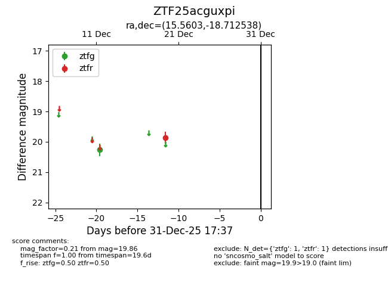
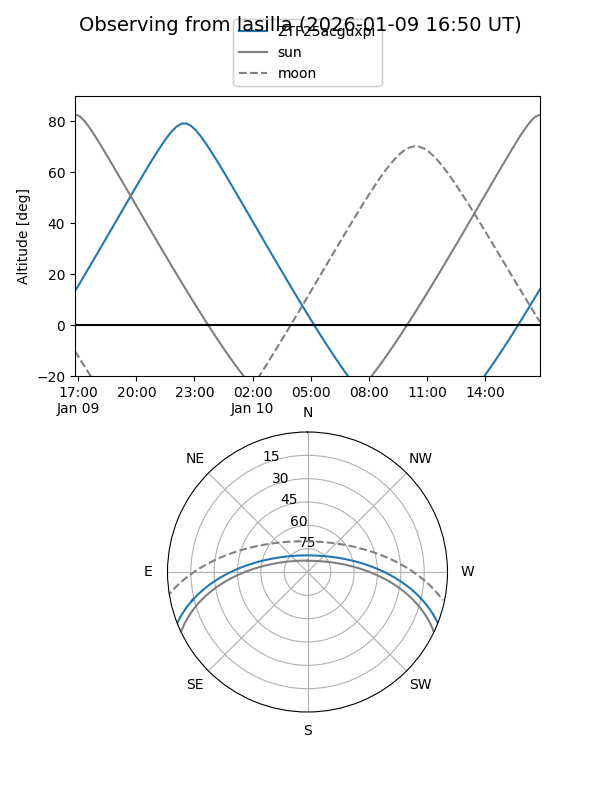
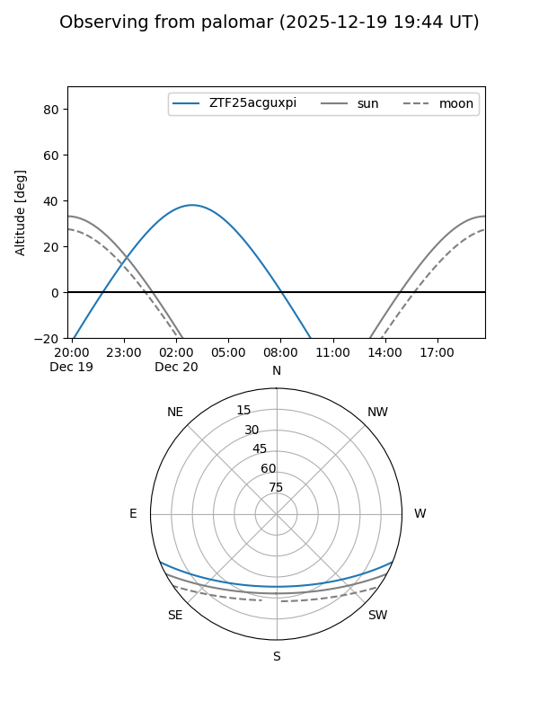

ZTF25acguxpi
Target ZTF25acguxpi at 2025-12-20 04:14
Aliases and brokers:
FINK: fink-portal.org/ZTF25acguxpi
Lasair: lasair-ztf.lsst.ac.uk/objects/ZTF25acguxpi
ALeRCE: alerce.online/object/ZTF25acguxpi
alt names
ZTF25acguxpi (ztf,fink_ztf)
Coordinates:
equatorial (ra, dec) = 15.5603,-18.71254
equatorial (HMS+DMS) = 01:02:14.47,-18:42:45.14
galactic (l, b) = (139.9433,-81.22532)
Flags:
Photometry:
last ztfg=20.26, ztfr=19.86
1 ztfg, 1 ztfr detections
Lightcurve

Visibility


Additional plots